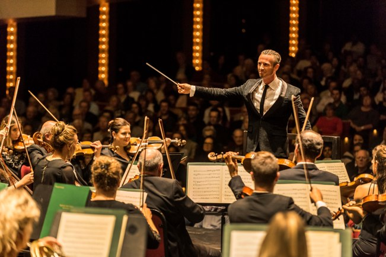
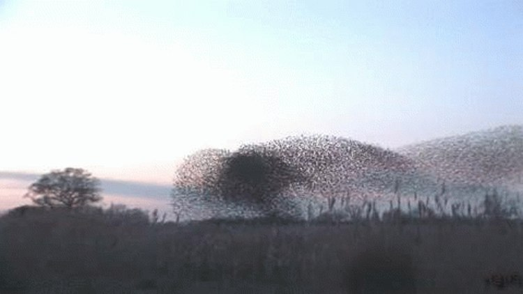
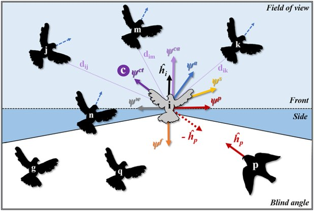
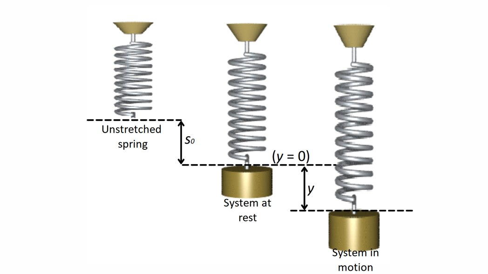

Dynamical Systems Approaches
The second family of answers to Bernstein’s problem: coordination isn’t commanded from above — it self-organizes from the physics of the body interacting with its world.
By the end of this lesson you will be able to…
- 1Contrast self-organization with the central-control view from Lesson 2.
- 2Explain the perception-action cycle and why it’s called a dynamical system.
- 3Describe Newell’s constraints — organismic, environmental, task.
- 4Explain the constraints-led approach to practice, and the theory’s limitations.
“The intelligent body”
Same question as always — how does the body organize its degrees of freedom into a controllable unit? — but a completely different answer from Lesson 2:
Coordination is not computed and stored by the brain. It emerges from the physics of the body, the task, and the environment interacting — the way order appears in nature without a planner.
These are “physics-based” theories — the intelligence is in the body-environment system, not just the head. The brain matters, but it isn’t the lone executive issuing every command.
Lesson 2 put the answer inside the head. This camp puts it in the whole system: the DOF get organized by self-organizing dynamics, so the brain has far less to compute. Same puzzle, opposite solution.
Two ways to organize a system of many parts
Any system with many components can be organized in one of two ways:

Top-down (Lesson 2)
A central planner issues commands down a hierarchy. The order comes from the executive — like a conductor directing every player.

Bottom-up (this lesson)
Order emerges from local interactions among components — no central planner. Simple local rules produce complex global patterns, like a flock with no leader.
Self-organization is everywhere in nature — physics, biology, social systems. The claim of this camp is that movement coordination works the same way.
Self-organization: the bird flock
A flock of birds wheels and turns as one — but there’s no lead bird broadcasting commands. Each bird just follows a few simple local rules based on its neighbors:

No bird is “in charge.” The flock’s beautiful coordination is an emergent property of many simple interactions — the same idea this camp applies to muscles and joints.
The perception-action cycle
Remember Lesson 2’s one-way pipeline (perception → cognition → planning → motor output)? This camp replaces that straight line with a loop. Perception and action continuously feed each other, with the environment in the circuit:
There’s no stored program dictating the movement in advance. Behavior emerges online from the tight coupling between the performer and the information in the environment.
Perception-action cycles in action
Once you look for it, this coupling is everywhere:
Walking in a busy hallway
You don’t pre-plan a route. You continuously adjust to the gaps and motion around you — perceiving and acting moment to moment (Fajen & Warren, 2003).
Walk → run on a treadmill
Speed the belt up and, at a certain point, walking spontaneously flips into running — a new coordination pattern self-organizes. Nobody “decides” the exact switch.
In each case, the movement pattern isn’t retrieved from memory — it arises from the performer-environment system meeting the demands of the moment.
Why “dynamical systems”?
A dynamical system is simply a system that changes over time according to some rule. The classic toy example is a mass on a spring:

The bet is that coordinated movement, like the spring, can be captured by laws of motion — not by a stored program spelling out every command.
Newell’s constraints framework
Newell (1986) proposed that movement is not directed by the brain alone, but shaped by constraints. A constraint is anything that eliminates certain possibilities for action — it imposes boundaries that channel how a movement turns out.
Organismic, environmental, task
Organismic
Factors unique to the individual.age, weight, limb length, strength, skill level
Environmental
Physical realities of the world.gravity, lighting, surfaces, weather
Task
Specifics of the movement task.the goal, rules of the game, equipment
Classify each constraint below. Answer all three to continue.
0 of 3 classified
Classify all three to continue.
Learning = finding & stabilizing patterns
From this view, motor learning means searching for and stabilizing new coordination patterns — against the pull of your existing habits — and becoming better attuned to the information that specifies what actions are possible.
This implies practice should manipulate constraints, keep the environment representative of the real setting, and use “repetition without repetition” — never the exact same movement twice, but repeated attempts at the same problem (Gray, 2021).
Notice this is almost the opposite of Lesson 2’s prescription (“drill one stable technique with error feedback”). Same goal, opposite practice advice — because the underlying theory is different.
The constraints-led approach (CLA)
Rather than drilling a skill by rote, a constraints-led coach considers the learner’s perceptual-motor needs and adjusts constraints to coax out better movement — letting the new pattern self-organize.
Take a basketball free throw. A motor-program coach would say: repeat the ideal form, over and over. What would a constraints-led coach be more likely to do?
Make a prediction to continue.
See it in action. A basketball trainer using the constraints-led approach — changing the task and environment rather than drilling one fixed form:
Video not loading? Open the reel on Instagram → (© Mitchell Kirsch, @hoopin_mitch)
Problems with dynamical systems theories
Like every theory, this one has real weaknesses — flip each card:
A coach widens the goal, adds a defender, and swaps in a heavier ball — then lets the athlete’s technique adapt on its own, rather than prescribing the “correct” form. Which view of motor control is this coach working from?
Answer to continue.
What you can now do
- 1Contrast self-organization with top-down central control.
- 2Explain the perception-action cycle and the dynamical-systems idea.
- 3Describe Newell’s three constraints and how they shape movement.
- 4Explain the constraints-led approach and the theory’s limits.
The thread: dynamical systems theories place the source of coordination in the whole body-environment system — the degrees of freedom get tamed by self-organizing dynamics, not by a stored plan.
You’ve now seen both families answer Bernstein: the intelligent executive (Lesson 2) and the intelligent body (Lesson 3). Lesson 4 turns from control to learning over time — two stage theories — and a synthesis where you’ll coach one case from both perspectives.